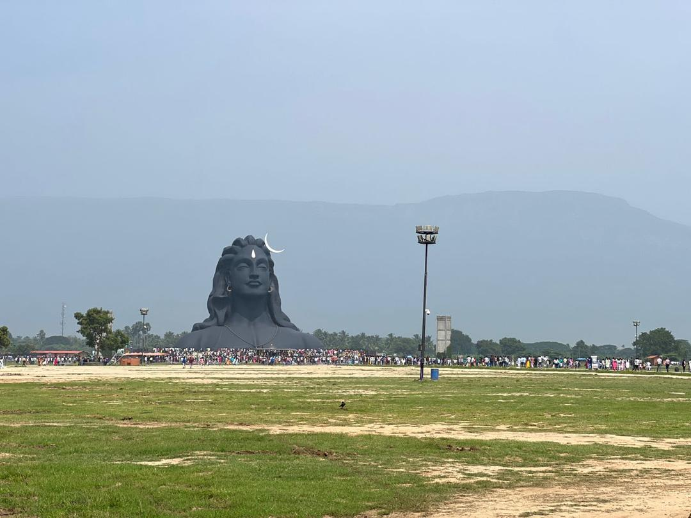

Real Story · 中文
我本来没有想过，自己会去 Isha Yoga Centre 学习。
我以前听过 Sadhguru 和 Isha Yoga Centre，但从来没有真正想过， 自己会在这趟旅程里去那里学习和练习。
后来，在 Mr. Sandeep 的启发下，加上一些 luck，我在离开 Malaysia 前往 India 之前， last minute 拿到了 14/11/2023 到 18/11/2023 的 English Inner Engineering class。
这件事其实发生得很紧。我 25/10/2023 要出发去 India， 可是课程是在 11 月中。旅程已经开始，路已经在前面展开， 我还要把自己准备好去上这个课程。
在课程开始前一个星期，虽然我已经在路上，我还是让自己开始 fully vegetarian。 这不是在一个很舒服、很稳定的生活环境里准备，而是在 campervan journey 里面准备。
课程里我学到很多知识。老实说，当时很多东西我听了，但不一定完全 digest 得了。 有些知识太大，有些概念太深，路上的我还没有办法全部吸收。
可是有一件东西真的留下来了：basic yoga，还有那套 21-minute kriya， Shambhavi Mahamudra Kriya，也叫 Shambhavi Kriya。
后来我才知道，这二十一分钟对我的旅程很重要。 因为它不是一套需要很大场地、很复杂设备的练习。 我可以在 Toyotaki 里面那条大概 2 feet wide × 5 feet long 的 walkway 做。
不管是在欧洲的冬天，还是中国的夏天，只要我还在车里， 只要那条小小的走道还在，我就还有一个方法让身体动起来， 让自己保持健康，也让精神不要散掉。
Seminar Question
回到 Malaysia 后，很多人问我同一个问题。
在我回到 Malaysia 后的 seminar 和 sharing session 里， 很多人都会问：
“你一个人开 306 天，身体怎样撑得住？精神怎样保持 alert？”
我其实没有什么神奇答案。 我不是每天都很强，也不是每天都很 disciplined。 我只是慢慢学会，在很小的空间里，用很小的方法，把自己拉回来。
那条 Toyotaki 里面的走道很小。 可是对我来说，它后来变成一个 daily maintenance space。 不是 gym，不是 studio，不是完美环境。 只是一个两尺宽、五尺长的小空间，加上二十一分钟。
English Memory Summary
A small practice became part of the road.
Tuzi had heard of Sadhguru and Isha Yoga Centre before, but she had never imagined that she would attend Inner Engineering during her overland journey.
Inspired by Mr. Sandeep and helped by some luck, she managed to join the English Inner Engineering class from 14/11/2023 to 18/11/2023, shortly after her departure from Malaysia to India.
One week before the programme, even while already on the road, she prepared herself to be fully vegetarian. She learned many things during the course, although not everything could be digested immediately.
What stayed with her was the basic yoga practice and the 21-minute Shambhavi Kriya. Later, this small practice became part of her daily road survival.
Inside Toyotaki, in a walkway of about two feet wide and five feet long, she found enough space to move, breathe, maintain health, and remain alert — whether in the winter of Europe or the summer of China.
Heart Statement
我不是每天都很强。
很多人问我，一个人开 306 天，身体怎样撑得住。 我其实没有什么神奇方法。
路慢慢教会我，人不一定需要很大的空间，才可以照顾自己。 有时候，只要 Toyotaki 里面那一条两尺宽、五尺长的走道， 再加上二十一分钟，我就可以把身体和精神重新拉回来一点。
我不是每天都很强。 我只是每天尽量不要让自己散掉。
I was not strong every day. I simply tried not to fall apart.